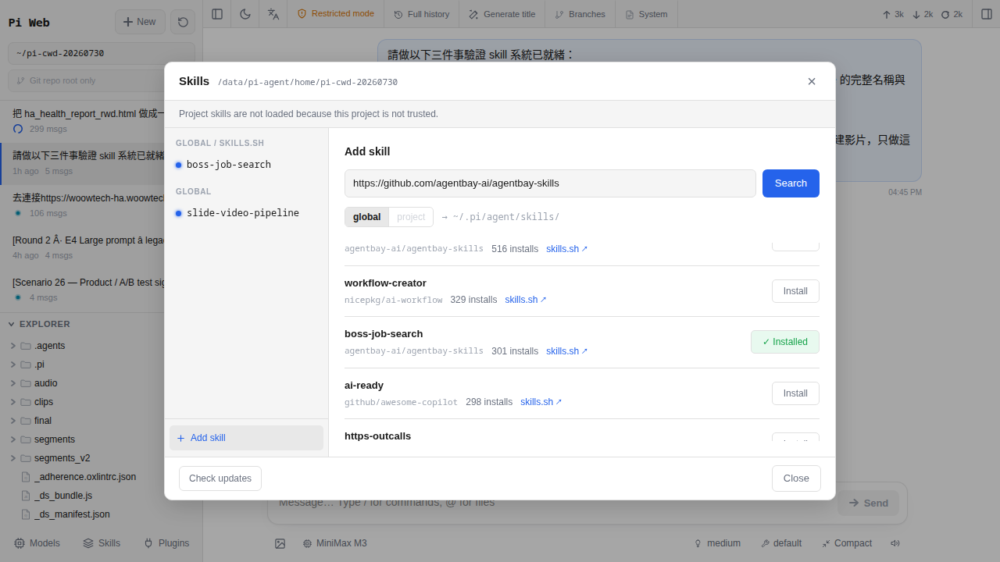

從 GitHub 裝別人做好的 Skill
上一章講完 Skill 是什麼，這一章直接動手。教你打開 Skills 面板、用內建搜尋在 skills.sh 目錄找一個現成 skill、按 Install、看它出現在系統提示裡。做完你的 AI 就多了那項新本事，全程不用寫程式、也不用 SSH 進 HA 主機。panel 是「搜尋為主、貼網址為輔」的商店介面，不是單純的 URL 輸入框——這是新手最容易誤解的地方，看到搜尋框以為壞了就不知道下一步該做什麼。
為什麼第一件事是「裝別人做好的」
第 14 章把 Skill 講成「教 AI 一項專門手藝」，也提到「網路上很多人已經幫你把手藝寫好，塞進 GitHub 上等你去撿」。那一章講的是概念，這一章告訴你怎麼撿。
從別人的 skill 裝起有三個好處：
- 不用會寫程式——skill 就是一個資料夾＋一份
SKILL.md說明書，寫的人已經打包好，你只需要「貼網址、按裝」兩步。 - 先體驗才知道值不值——與其花一小時看範例學怎麼寫，不如花三分鐘裝一個現成的，用它一個下午確認 Skill 這套機制是不是你要的，再決定要不要投入時間自己寫（第 16 章會教）。
- 看好作品當教材——你裝進來的 skill，其實就是一份「別人怎麼寫 SKILL.md」的活範例。之後要自己寫的時候，去
/data/pi-agent/skills/底下打開SKILL.md抄結構抄語氣，比看空白模板快十倍。
還有一個容易被忽略的動機：Skill 是 Pi Agent 生態系的核心，而不是可有可無的花邊。同一顆 AI 大腦（例如 GLM-4.6），有沒有裝對 skill，做同一件事的結果會差很多。裝了 home-assistant-best-practices 之後，AI 幫你寫自動化會直接跟你講「這裡用 helper 比 template sensor 好」；沒裝的話，AI 會用它自己（可能過時的）習慣硬寫。這不是誰比較聰明的問題，是「有沒有把家裡的規則告訴它」的問題。
Skill package spec 的四種寫法
Pi Agent 底層是 @earendil-works/pi-coding-agent（pi CLI），Skills 面板的「Add skill」按鈕其實就是 pi install <package-spec> 的圖形化版本。package spec 有明確格式，不是任你亂貼。以下四種是官方 packages.md 列的合法來源：
| 來源類型 | 寫法範例 | 底層動作 | 裝到哪 |
|---|---|---|---|
| npm 套件 | npm:@scope/pkg@1.2.3npm:my-pi-skill |
跑 npm install |
~/.pi/agent/npm/ |
Git（git: 前綴） |
git:github.com/user/repo@v1git:git@github.com:user/repo |
git clone（吃 shorthand） |
~/.pi/agent/git/<host>/<path> |
| Git（協定完整 URL） | https://github.com/user/repossh://git@github.com/user/repo |
git clone |
同上 |
| 本地路徑 | /absolute/path./relative/path |
寫到 settings、原地讀取 | 原路徑不搬 |
owner/repo 這種裸縮寫（像 gh repo clone 那樣）——Pi Agent 不吃。要用 GitHub shorthand 一定要加 git: 前綴變成 git:github.com/owner/repo；不然只有 https://、http://、ssh://、git:// 這幾個協定 URL 才被接受。四種背後其實共用同一個機制：把資源展開後，讓 pi 掃 ~/.pi/agent/skills/、~/.pi/agent/npm/、~/.pi/agent/git/ 三個位置的 skill 目錄（有 SKILL.md 的資料夾），註冊成 session 開場時可用的 skill 集合。Woow 的 add-on 額外做了一件事：把 $HOME/.pi/agent/skills 用 symlink 指到 /data/pi-agent/skills，讓 UI 與 CLI 在 HA volume 上共用同一份狀態（這叫「skills 路徑橋」，寫在 docs/ARCHITECTURE.md）。
~/.pi/agent/skills/ 這個目錄本身「不裝 npm/git 包」——它是留給你手動丟 SKILL.md 的地方（第 16 章會教）。npm 與 git 裝來的 skill 分別去 npm/ 與 git/ 目錄，別去 skills/ 底下找。
react、testing 搜 skills.sh 目錄）、右側「Add skill」按鈕開對話框讓你貼 npm: 或 git: package spec；下方列出已裝的 skill，每列可切 enable/disable、Check updates、Remove。Pi Agent 是怎麼下載這些 skill 的
知道背後在跑什麼，會讓你比較安心，也在出事的時候比較好排查。Pi Agent 拉遠端 skill 的方式很傳統：對 npm: 就是 npm install、對 git: 就是 git clone。
Woow 的 add-on 基底映像從第一版就把 git、openssh-client、curl、jq、ca-certificates 這幾個裝在 Containerfile 的第一段 apt-get install（不是後來版本才加上去的功能——註解直接寫明「are needed by the provider check, the models.json merge and the skills CLI, which shells out to git and ssh」）。所以你按「Install」的當下，容器裡跑的實際指令視 spec 而定：
# 你貼 npm:@foo/bar
pi install npm:@foo/bar
# 底層：npm install，落在 ~/.pi/agent/npm/@foo/bar/
# 你貼 git:github.com/user/repo@v1
pi install git:github.com/user/repo@v1
# 底層：git clone --branch v1，落在 ~/.pi/agent/git/github.com/user/repo/
# 你貼 https://github.com/user/repo
pi install https://github.com/user/repo
# 底層：git clone，落在 ~/.pi/agent/git/github.com/user/repo/在 Woow 的 add-on 裡，$HOME/.pi/agent/skills 是一個指到 /data/pi-agent/skills 的 symlink（skills 路徑橋，見 ARCHITECTURE.md 第 148 行說明「Pinning HOME into the volume is what makes the CLI and the web UI agree on state」）。UI 與 CLI 因此對「哪些 skill 已裝」看到的是同一份狀態，不會出現「命令列裝了但 UI 找不到」這種鬼故事。你在 UI 上做的其實是 pi install 的圖形化版本，這點知道之後很多疑問就自然消解了：
- 為什麼有
npm:跟git:兩種前綴？因為底層是兩套完全不同的套件管理系統，pi 用前綴決定要叫誰。 - 為什麼私人 repo 有可能通？因為
openssh-client有裝、~/.ssh/config被讀，SSH URL 走你的 key（見下節）。反而是 HTTPS 私人 repo 卡在沒有 UI 填 PAT——這是 UI 限制，不是後端不支援。 - 為什麼裝了不會自動更新？Git ref 被 pin 死（pinned tags/commits）。
pi update --extensions或 UI 上的「Check updates」才會去看有沒有新版；設定成@v1之類的 ref 更是刻意不動。 - 為什麼安裝失敗會留下爛掉的資料夾？0.83.0 已經修掉這個 bug（CHANGELOG「Fixed failed Git package installs leaving partial directories that blocked clean retries」）。舊版遇到就手動
rm -rf那個路徑重試。
/data/pi-agent/ volume 都會被 HA snapshot 涵蓋（第 20 章），這代表你的 skill 收藏（包含 skills/、npm/、git/、以及決定「哪些有 enable」的 ~/.pi/agent/settings.json）主機還原後都會回來，不用重裝一次。動手裝一個真實 skill
我們用一個常見的公開 repo 當示範：mattpocock/skills（Matt Pocock 是 TypeScript 圈的知名教學者，這個 repo 是他公開的 skill 集合）。它跟家庭情境沒直接關，但它是個「絕對裝得起來」的 baseline，用來讓你熟悉流程剛剛好。
-
打開 Pi Agent 工作區
從 Home Assistant 側邊欄點「Pi Agent」進到主介面（第 3 章教過的路徑）。你會看到左邊是 Session 列表、中間是對話區、右上有一排小圖示——那排小圖示就是面板切換列。
-
切到 Skills 面板
頂端工具列有 Extensions／Skills／Prompts／Themes／Plugins 這幾個資源分頁，找到「Skills」點下去（tooltip 顯示 Skills，i18n key 是
i18n.skills）。畫面切到 Skills 管理面板：上方是一個搜尋框，placeholder 寫著「e.g. react, testing, deploy」（i18n keyi18n.skillSearchPlaceholder）；右上角一個「Add skill」按鈕；下方是已裝清單（第一次進去空的，會顯示「No skills found」，並附一個連skills.sh的提示「to discover and install skills for your agent」）。 -
兩條路：先試搜尋，找不到再手動 Add skill
路 A（推薦）：直接在搜尋框打
mattpocock或關鍵字，pi-web 會打/api/skills/search去查skills.sh目錄，找到就顯示卡片、右邊一顆「Install」按鈕，按下就裝。路 B：按「Add skill」按鈕開對話框，裡面一個輸入框，placeholder 是npm:@scope/package——這時候你可以貼任何合法的 package spec（見上一節四種格式）。 -
貼上合法的 package spec
如果走路 B，貼這行任一皆可：
git:github.com/mattpocock/skills # 或協定完整 URL https://github.com/mattpocock/skills # 或指定 tag / commit git:github.com/mattpocock/skills@main不要貼裸
mattpocock/skills——pi 不吃這種縮寫。要用 GitHub shorthand 一定要加git:前綴。同時對話框旁邊會有 scope 切換（global 對應~/.pi/agent/settings.json、project 對應.pi/settings.json）——沒特別想法就選 global。 -
按 Install 開始下載
按「Install」按鈕（i18n key
i18n.install；下載中顯示「Installing…」）。這時候實際跑的是pi install，後端 POST 到/api/skills/install（body: {cwd, package, scope}）。時間 5-30 秒視 repo 大小與網路而定。不要按取消也不要重整頁面，讓它跑完；成功會跳一個 toast「Package installed.」（i18n keyi18n.packageInstalled）。 -
看到 skill 出現在列表就成了
安裝完面板下方多一個項目，每列右邊有 enable/disable 開關、「Check updates」與移除。裝在哪個實體路徑：npm 包在
~/.pi/agent/npm/…、git 包在~/.pi/agent/git/<host>/<path>/…——UI 的「Installed path」欄位（i18n keyi18n.installedPath）會直接告訴你。 -
用 Reload session 或開新 session 驗證 skill 有進到 system prompt
Skills 面板右上通常有「Reload session」按鈕（i18n key
i18n.reloadSession），按了會重跑 skill 掃描並提示「Session reloaded.」。或者按左上「New session」開新對話——system prompt 是 session 開場決定的、不會中途重讀。然後點右上「System prompt」面板（唯讀）往下捲，你應該能看到<available_skills>…mattpocock-skills…</available_skills>區塊（pi 遵循 Agent Skills 規格）。看到自己剛裝的名字，就代表 pi 認得它、AI 在這個 session 「知道」它可以用。
enableSkillCommands 開了的話 skill 還會註冊為 /skill:name 斜線命令，在對話輸入框打 /skill: 就會列出所有可用 skill 供你選（見 skills.md「Skill Commands」節）。git: 縮寫與 ref pin（不是裸 owner/repo）
Pi 的 git: 前綴解鎖兩種能力：host/user/repo 縮寫與SSH shorthand。以下同一個 mattpocock/skills repo 的六種等價寫法都會 clone 到 ~/.pi/agent/git/github.com/mattpocock/skills/：
| 你貼什麼 | 結果 |
|---|---|
git:github.com/mattpocock/skills | HTTPS clone，抓預設分支 |
git:github.com/mattpocock/skills@v1 | HTTPS clone，pin 到 v1 tag |
git:git@github.com:mattpocock/skills | SSH clone（用 ~/.ssh/config 的 key） |
https://github.com/mattpocock/skills | HTTPS clone；不用 git: 前綴 |
ssh://git@github.com/mattpocock/skills | SSH clone；不用 git: 前綴 |
mattpocock/skills | 不吃——沒有前綴的裸縮寫會被拒絕 |
重要規則（packages.md git 節白紙黑字）：
- 沒有
git:前綴時，只有協定 URL被接受：https://、http://、ssh://、git://。 - 加了
git:前綴才能用host/user/repo或user@host:path這類 shorthand。 - Ref 一律 pin 死。
@v1就是永遠v1；pi update --extensions不會把@v1移到v2，只會把 clone 對到你設定的 ref。想升就pi install git:host/user/repo@new-ref覆蓋。 - SSH URL 自動用你 SSH agent 或
~/.ssh/config的 key；CI 環境可以設GIT_TERMINAL_PROMPT=0與GIT_SSH_COMMAND="ssh -o BatchMode=yes"快速失敗。
非 GitHub 平台完全支援——直接把 host 換掉：git:gitlab.com/user/repo、git:codeberg.org/user/repo、git:git.your-domain.tw/user/repo。這跟「GitHub 才有特權」相反——git: 縮寫不預設 GitHub，任何 host 都吃。
npm、uv 的 git+ 語法族系相近，但不完全一樣。gh repo clone owner/repo 的裸縮寫是 gh CLI 自己實作的假設，pi 明確拒絕這樣做，避免「這個 foo/bar 到底是 npm 還是 GitHub」的歧義。不同來源的差別與踩雷點
裝 skill 看似只是「貼 spec、按 Install」，但每種來源背後的 auth 與更新機制差很多。這節把各種情境攤開來，讓你選對路。
| 來源類型 | 會不會通？ | 為什麼 | 解法 |
|---|---|---|---|
公開 GitHub repo（HTTPS，https://… 或 git:github.com/…） |
會，一貼就通 | 公開 repo 的 git clone https://… 完全不需要 auth |
直接用，這是 90% 的情境 |
公開 npm 套件（npm:@scope/pkg） |
會，跑 npm install |
作者已把 skill 打包發佈到 npm registry | 能用 @version pin 版本；生態系不夠成熟，多數 skill 還是走 git |
| 私人 GitHub repo（HTTPS） | 不會通 | UI 沒有欄位填 PAT，非互動式的 git clone 遇到需要密碼就死 | 三選一：（1）fork 成 public；（2）改走下面 SSH；（3）SSH 進 HA host 手動 git config --global credential.helper store 快取密碼 |
私人 GitHub repo（SSH，git:git@github.com:owner/repo） |
會通，pi 官方支援 | openssh-client 有裝、~/.ssh/config 有被讀（docs/packages.md：「SSH URLs use your configured SSH keys automatically」） |
HA host 產 key、貼 public key 到 GitHub Settings → SSH Keys、key 放在 /data/pi-agent/home/.ssh/（因為 HOME 被 pin 到 volume），先 ssh -T git@github.com 把 host key 加進 known_hosts |
| 非 GitHub 平台（GitLab／Bitbucket／Codeberg／自架） | 會通，用 git:host/user/repo 或完整 https://… |
Pi 的 git shorthand 不預設 host，任何 host 都吃 | 直接貼，跟 GitHub 一模一樣的體驗 |
| 本地路徑 | 會，寫到 settings 原地讀 | 不搬檔——settings.json 記絕對路徑，pi 每次啟動去掃 | SSH 進 HA host 用 scp／Samba 丟到 /data/pi-agent/ 底下再貼路徑；第 16 章會教 |
/data/pi-agent/home/.ssh/（因為 HOME 被 pin 到 volume，不是 /root/.ssh/；見 docs/ARCHITECTURE.md）。這條路第一次設定 30 分鐘、之後才一勞永逸。除非你已經是走 SSH 管 git 的人，一般家用建議先走「fork 成 public」的路線——五分鐘搞定，之後直接按裝就通。裝完 skill 該做的三件事
Skills 面板上多了一列不代表「這就結束了」。認真用一個 skill，還有三件事要做：
-
開新 session 測試 skill 有反應
剛剛第 7 步在 System prompt 看到 skill 名字，只代表 pi-web 「認得」它，還沒證明 AI 真的會用。開一個新 session，用測試句直接點名這個 skill：例如「請你用 skill 名字 幫我做 XX」。AI 如果有回應、有動用工具，就代表 skill 通了。如果 AI 說「我沒看到這個 skill」或直接無視，回頭排查（見「troubleshoot」）。
-
讀 skill 的 SKILL.md 搞懂它能做什麼
裝完最容易忽略的事就是不讀說明書。SKILL.md 才是主說明書（不是 README.md）——pi 讀的 frontmatter
name、description、allowed-tools都在裡面，也會告訴你觸發情境、需要的工具、環境變數。花 5 分鐘讀完比在對話裡瞎試半小時有效。UI 上點該 skill 列會展開細節、或用 Installed path 找到實體路徑打開：/data/pi-agent/home/.pi/agent/git/<host>/<user>/<repo>/SKILL.md（git 包）或…/npm/…（npm 包）。 -
沒幫上忙就移除，別留在那裡佔 tokens
Skill 只要出現在
<available_skills>塊裡，就會占用 system prompt 的 tokens——這是每一次對話都要吃的固定成本。用一個星期發現這個 skill 你根本用不到，或者它跟你其他 skill 職能重複，就大方地移除。留著只是花你 API 的錢還讓 system prompt 變雜亂，讓 AI 挑錯 skill 的機率變高。移除方法看下一節。
移除 skill 的兩種方式
移除 skill 有兩條路，各有各的場合：
方式 A：從 Skills 面板 UI 刪（走 pi remove）
打開 Skills 面板切到那個 skill 的列，右邊有「Remove」按鈕。按下跳確認對話框、按確定，後端跑 pi remove <spec>：從 settings.json 拿掉登錄、把 ~/.pi/agent/git/… 或 ~/.pi/agent/npm/… 底下的資料夾刪乾淨。UI 冒出「Package removed.」toast（i18n.packageRemoved）。這是 99% 情境該用的方式——不會漏刪 settings 也不會刪錯路徑。
方式 B：SSH 進 HA host 跑 pi remove
UI 掛了、或某包壞到 pi-web 讀不到列表、或要一次刪很多個——走 terminal 跑 CLI 而不是自己 rm -rf：
# SSH 進 HA host（Advanced SSH & Web Terminal add-on）
podman exec -it pi-web bash # 進到 pi-web 容器
# 或走 HA add-on 的 Terminal
# 看目前裝了哪些
pi list
# 刪一個 npm 包
pi remove npm:@foo/bar
# 刪一個 git 包
pi remove git:github.com/user/reporm -rf 資料夾不會把 settings.json 的登錄清掉——下次 pi 啟動看到 settings 寫「有這個包」但檔案不在，會嘗試重裝或報錯。永遠優先用 pi remove。真的要手動清就記得同時編輯 ~/.pi/agent/settings.json。刪完 reload session（或開新 session），System prompt 就不會再有那個 skill。舊 session 不受影響——skill 內容在開場就嵌進 system prompt 了，之後刪 skill 跟舊 session 的 context 無關。
常見卡關
-
貼了 URL 按確認完全沒反應
四個常見原因：（1）你貼了裸
owner/repo——pi 不吃這種縮寫，改成git:github.com/owner/repo。（2）URL 打錯字——最容易是漏掉https://或 owner 拼錯，新分頁貼 URL 檢查一次。（3）repo 是 private 或已刪除——無痕視窗開那個 URL，看得到才是 public。（4）你剛按 Install 但沒等後端跑完——面板下方會有「Installing…」狀態文字，等它變綠色勾勾。 -
裝到一半跳 fatal 401 或 Authentication failed
這就是私人 repo的招牌錯誤——Pi Agent 沒有 auth 設定，遇到需要密碼的 repo 就是死路。解法：把 repo fork 成 public（在 GitHub 網頁上 Fork 那顆按鈕、然後到 fork 的 Settings 把 Visibility 改成 Public），然後改裝你 fork 過來的 public 版本。這是為什麼上面「來源對照表」那格特別強調——因為這是新手最常撞的坑，遇到就當「重複別人的 repo 一次」處理，不要糾結 auth 怎麼設。
-
Clone 明明完成了但 Skills 面板不出現
先按面板右上「Reload session」（i18n key
i18n.reloadSession）——這比 F5 更精確，因為 skill 掃描是「開 session」才會做，重整頁面不會重掃。還是不出現按 F12 打開 devtools，切到 Console 看有沒有紅字，再看 Network 分頁那個/api/skills?cwd=…請求（Woow 的 acceptance suite 有測這個 endpoint，正常應該 200）——如果它回 4xx／5xx 就是後端問題。403 特別要留意：這代表你目前的cwd不是「trusted project」也不是預設的pi-cwd-YYYYMMDD/資料夾——見 ARCHITECTURE.md「Allowed cwd roots」節。 -
Skill 裝完了但 AI 好像完全忽略它
先確認 skill 有進到 System prompt（右上面板往下捲找
<available_skills>）。有的話問題就在觸發強度——這個 skill 的SKILL.md裡的 description 寫得太模糊，AI 判斷不出你在做的事情該不該叫它。臨時解法：對話裡直接點名「請用 skill 名字 幫我」。長遠解法：讀那個 skill 的 README 看有沒有「Trigger phrases」建議、或者第 16 章教你怎麼寫更清楚的 description。 -
Clone 卡在 50%、進度條不動
網路問題居多。可能是 HA 主機連 GitHub 慢、或 repo 太大（少數 skill repo 有含大型 asset，數十 MB 起跳）。解法：等 3-5 分鐘看看會不會自己完成。真的太久就取消，SSH 進 HA host 手動跑 CLI：
pi install git:github.com/xxx/yyy——terminal 會顯示每一步的狀態，卡在哪裡看得比 UI 進度條清楚（因為 UI 與 CLI 共用 skills 路徑橋，CLI 裝好 UI 就會看到）。不要自己在~/.pi/agent/git/下git clone——會缺 settings.json 的登錄，UI 認不到。 -
裝進來的 skill 名字重複、跟原有的撞名
Pi 用 SKILL.md 的
name欄位當 key（不是資料夾名，見docs/skills.md「Frontmatter」小節：「Pi does not require this to match the parent directory」）。兩個 skill 撞名時，pi 有 dedup 機制，同 scope 只留一份、跨 scope 走「project 蓋 global」。解法：不要手動改資料夾名——那不解決問題。改去~/.pi/agent/settings.json把其中一個包從packages陣列拿掉，或直接用 UI 的 disable 開關關掉衝突的那個。 -
裝完想更新到最新版
UI 有更新按鈕：每個 skill 列右邊有「Check updates」（
i18n.checkUpdates），按一下 pi 會打/api/skills/check比對本地與 upstream 的 versionHash；如果有新版，同一列冒出「Update」按鈕（走/api/skills/update）。SSH 進 HA host 也可以：pi update --extensions一次盤點所有 git／npm 包，或pi update npm:@foo/bar只更新一個。pin 死 ref（@v1）的包不會被自動移到新 ref，只會重整 checkout；要換 ref 用pi install git:host/user/repo@new-ref覆蓋。 -
Skill 資料夾長超級大、占很多硬碟
正常 skill 幾百 KB 到幾 MB，如果
du -sh /data/pi-agent/git/github.com/<user>/<repo>是幾百 MB 甚至 GB，通常是 repo 帶大型 asset（範例影片、pre-trained model）。看 README 用途——用不到直接 remove，用得到但不想占硬碟就把 SKILL.md 和最小資料夾複製到/data/pi-agent/skills/<name>/（skill hand-authored 位置），然後把原本的 git 包 remove，再用本地路徑（/data/pi-agent/skills/<name>）重新裝一次。詳見第 16 章。
常見問題
要怎麼找到好用的 skill？有清單可以逛嗎？
skills.sh 是社群整理的精選站，可以逛主題分類。（2）GitHub 上直接搜 topic:claude-skill 或 topic:pi-agent-skill。（3）在 Reddit 的 r/ClaudeAI、r/homeassistant、Twitter/X 找 #skills 話題。優先挑跟 HA、smart home、家庭情境相關的——通用型的 skill（例如 general coding、markdown 格式化）對家用場景幫助有限。裝了 skill 對話品質會變好嗎？
Skill 會不會自動更新？作者改了我這邊也會跟著改嗎？
pi update --extensions。Pin 死的 ref（@v1）連 update 也不會移到新 tag，只會重整到你設定的 ref——想升就明確 pi install git:host/user/repo@new-ref。這個機制是刻意的：避免「作者半夜 push 了 breaking change 你早上起來自動化就爛掉」的情況。一次可以裝幾個 skill？有沒有上限？
裝了不同 skill 會不會互相衝突或搶著回應？
SKILL.md 的 description，看有沒有兩個描述涵蓋一樣的觸發情境。有的話留一個就好。這也是為什麼建議「先只裝 1-2 個用熟再加」。裝進來的 skill 在哪個實體檔案裡？我想手動偷改一下
/data/pi-agent/home/.pi/agent/npm/<pkg>/；git 包在 /data/pi-agent/home/.pi/agent/git/<host>/<user>/<repo>/；你手寫的在 /data/pi-agent/skills/<name>/（透過 skills 路徑橋 symlink 到 $HOME/.pi/agent/skills/，兩個路徑指同一份檔案）。UI 的「Installed path」欄位（i18n.installedPath）會直接告訴你確切路徑。從 HA host 用 Advanced SSH add-on 進去 cd 過去就能改。手動改是允許的——但 pi update 對 git 包會 reset 掉你的改動；長期改就 fork 成自己的 repo 再裝。把 API 費用花在 skill 上值不值？
可以把 skill 的資料夾複製到另一台 Pi Agent 用嗎？
skills/。從 A 主機把整個 /data/pi-agent/（包含 skills/、home/.pi/agent/npm/、home/.pi/agent/git/ 和 home/.pi/agent/settings.json）tar 打包，B 主機同路徑解開再 reload session 就會認到。settings.json 是關鍵——它記錄了「哪些 npm/git 包已安裝、pin 在哪個 ref、什麼 scope」，沒帶就等於沒裝。備份的話直接用 HA snapshot 更省事，第 20 章會講到 /data/pi-agent/ 整個目錄會被涵蓋。